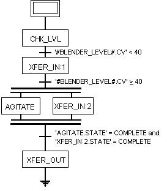

Continuance
Continuance works in recipes at the operation level. It allows for one phase to continue executing while a subsequent phase also executes.
To configure an operation using continuance, you must give the step before and after the transition the same name (XFER_IN in this example). Also, the separating transition cannot have the continued phase's state equaling complete. That is, the transition must be evaluating some other parameter to proceed. In this example, the transition is looking at the blender level current value to determine when to begin agitating ("#BLENDER_LEVEL.CV> 40).

In this example, the XFER_IN:1 step continues (through XFER_IN:2) while the AGITATE step activates. The AGITATE step starts once the BLENDER_LEVEL is equal to or greater than 40. The transition after XFER_IN:2 waits for both AGITATE and XFER_IN:2 steps to be completed before allowing the recipe to proceed.
However, you can write the transition to wait for just one step (for example, XFER_IN:2) to complete ('XFER_IN:2.STATE'=COMPLETE). When the expressions evaluates to true, the transition sends a stop command to the other step (AGITATE in this case) and the next step (XFER_OUT) begins. It is important that the stop logic in the AGITATE phase be written to handle this situation and, in this example, stop the agitator.
You can also write the recipe so that XFER_IN is not to be STOPPED and the STARTED, but rather continues running and receives a DOWNLOAD command. Typically, the phase would take some action on receiving this command, such as asking for a parameter to be downloaded (perhaps a parameter is used to set the flow rate differently for the two charges).
The DeltaV system sets the BCOMMAND parameter to DOWNLOAD when this happens. It also sets the DOWNLOAD_REQ register to TRUE. The phase logic must be written to detect the DOWNLOAD_REQ value and clear it when done.